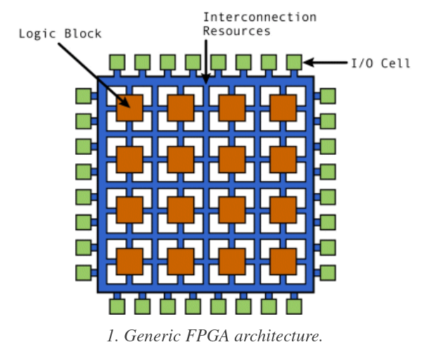
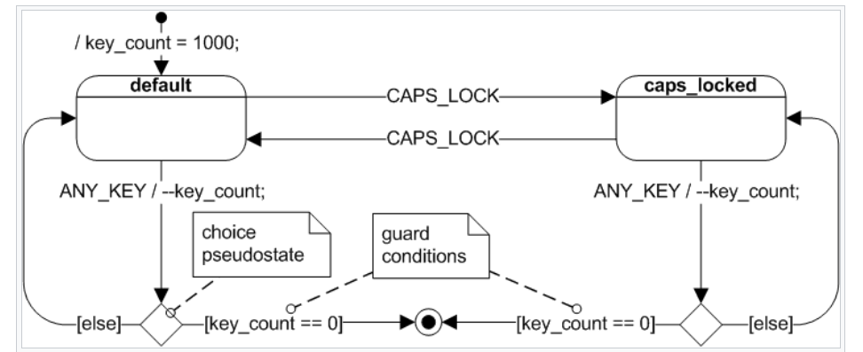
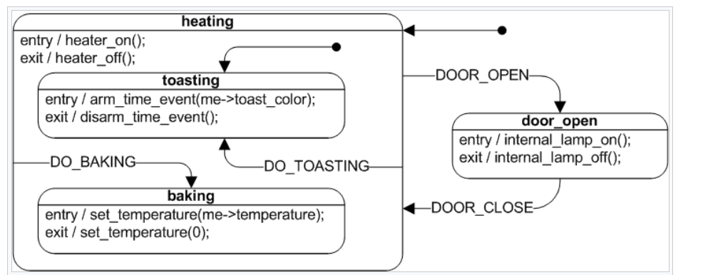

Introduction
Wiki for storing knowledge on various subjects
Daily Websites
Websites that I found helpful to browse frequently:
Daily
Weekly
Monthly
References
Resources/tools that are good to review when needed for things that I specialize on. Also personal notes and summary of cool articles.
Embedded Websites
General
- Embedded Template Library: Actually has a bunch of data structure and algorithms, also some extra stuffs like state machine.
CI/Testing
Kernel Hacking
Tooling
- Segger Ozone: Pretty decent visual debugger. Basic features are free.
- Segger RTT: Really fast printing even faster than SWO, even support color printing and has nice client application to view the printing.
- Segger SystemView: Can be used with any JLink(since RTT can be used with any JLink), note that this thing seems buggy, check our own post.
Others
BLE
Notes about the Protocols
- All device must advertise using the 1Mbps PHY for compatibility, devices that can use the 2Mbps PHY can use the 1M to jump to 2M.
- You can not have GATT communication on 2M if you didn't advertise on it.
- MTU affects whether you need to do long write while data length affect how efficient the lowest level send out packet, a big MTU can be inefficient if you have to split it too much although big MTU will giver upper layer better ergonomics
- While ATT is the most commonly used protocol to talk, other high level protocols such as CoC can be used that improve throughput for other applications
- Extended advertising may not be implemented even though devices implement BLE 5
Notes about Android API
- Android by default only uses 1M PHY, must set legacy mode to false to talk with 2M.
- The API itself is not that bad, should probably use it since even popular third-party implementation can be spotty
Helpful Stuffs
- Device BLE Capability Database: Good if you have a SIG account, save a lot of guessing about your phone's BLE capability.
- NRFConnect App: Pretty good for testing both client and server. Also allow you to discover some BLE capabilities of your phone.
C++
Learning Resources
- Core Guidelines: CPP Core Guidelines.
- GSL: Implementation of the Guidelines Support Library.
- Folly: Facebook general library.
- SG20 Education Working Group: Lots of curated videos.
Tooling
- GCC 10 Built-in Static Analysis
- Sanitizers: Way better than Valgrind
Improving Compile Time
- CMake 3.16 supports unity build: Works by combining multiple source files into one source file and then build it at once. Note that there is a lot of "but" and can be hard to use for every cases.
- CMake 3.16 supports precompiled headers: Partially parses compiled headers and save it for later. Took kind of a lot of work to set it up
Software Architecture
Mono Repo vs Poly Repo
Mono repo should apply for most cases since they reduce the amount of work to keep library in sync and also make it easier to work on issues that span multiple libraries
Poly repo is used when you have to break a piece out because multiple places are using them
Mono and poly are not exclusive, you can have a repo that can multiple libraries that are meant to be used together
Estimation
This Embedded Artistry articles demonstrates approaches to predicting. There are various rules but the good ones seem to avoid the mob effects and the come-first mentality where the first estimation is repeated by everyone else. They usually accomplish these two things by making sure everyone's estimation is taken into account anonymously and at the same time.
Designing Abstractions
As illustrated in this article, lack of abstraction is almost as prevalent as premature abstraction, when we find ourselves bolting more stuffs on the old code, it's time to rethink the design. Have patience before refactoring to avoid over abstraction.
Side Topics
For things that I don't specialize on but is helpful to know.
FPGA
Terms That Is Forgotten A Lot
- Combinatorial Logic: Where two or more input defines one output. This can be like addition where c = a + b.
FPGA Components
FPGAs are made of blocks and connected together by programmable routes.
- Logic block: Contains logic components like multiplexer(for routing between other components), flip flops(storage based on clock signal), RAM(for look up table, aka truth table).
- IO Block: Connect logic blocks with external components. Handle things like like slew rate, active high/low, pull-ups, pull-down, etc.
- Interconnect: The programmable routes(in the form of matrix), there are short lines for blocks closed together and long lines for blocks far from each other. There are global clock lines that are connected to the logic block clock lines to distribute clock. They are the FPGA fabric.

Types of Cores:
- Soft Cores: Mainly implemented using HDL code.
- Hard Cores: Actual physical cores surrounded by programmable logic on the chip.
- IP Cores: Soft Cores designed by other people for you to use. These things tend to have been characterized(ie information regarding their speed and power consumption is known)
- Specialized Cores like DSP Cores, Processor Cores, Analog Cores
How Is FPGA Programmed
There are 3 methods for programming FPGA(aka saving whether to have 1 or 0 at a certain transistor using bitstream), they are all storage technology:
- SRAM: Most common right now but more error prone(due to being volatile) and higher power consumption. Require external device to program the RAM on power-up.
- Antifuse: Normally not connect, large current causes connect. Doesn't need external programmers as the design is burned onto the fuse itself, however, the fabrication yield is low.
- Flash: Combine advantage of the two above, might be more common in the future.
The flow from your code to the bare-metal go like this, note that at each steps, there are a different set of optimization that is performed:
- HDL goes through synthesis to RTL(which is an abstraction that uses combinatorial data path and register(but in more abstract term like a storage element) to describe the design, very abstract).
- RTL goes to gate level(uses actual gates like OR, AND and registers(actual makeup of register using flip-flops and not simply just an abstraction for a storage element)). Note that there are two types of gate levels:
- Logical Gate Level: Contain theoretical gates like AND, OR, NOT and registers.
- Physical Gate Level: Contains only gates that are available on the FPGA.
- From the gate level the place-and-route program connects things together on the actual chip. Placing determines where the components(gates should be) and route decide how to connect them.
HDL
SystemVerilog is a superset of Verilog. And like C++ each of them has version labeled by year(like Verilog-2005), it's helpful to know this when seeing synthesizer says which standard do they support.
Note that Verilog can be synthesizable or not, synthesizable means that it can map directly to hardware. The non-synthesizable stuffs are for test benches.
HLS
HLS are high level languages like C and C++ and get compiled down to RTL. It is a productivity tools.
Resources
General
- Verilator: Open source simulator.
- Yosys: Open source Verilog Synthesis, actually support Xilinx 7 series chip.
- Yosys Manual: Contain quite a lot of information about Verilog is Synthesized.
- Detailed paper about open source Verilog Workflow
- Free VHDL book
- Chisel: Open source HDL language in Scala, that is designed by Berkeley and used by Google TPU. It can actually compile down to Verilog so it should theoretically work with everything but the reality is more complicated than that.
- Rocket Chip Generator: Tooling for generating a RisC-V SOC.
VHDL is apparently way harder to parse than Verilog so that's why open source tooling is focused on Verilog right now, there are efforts to get VHDL working though.
Xilinx
Xilinx Vitis: Goes from languages like C++, Python to gate level. This is based on Xilinx SDx which compiles C++ to hardware code.
UML
UML is a modeling language, it's helpful for making simple charts and diagrams to document and visualize design but don't get too deep on it.
PlantUML
PlantUML allows you to describe your UML diagram using text so it's pretty convenient to check it in to vcs. There is also a vscode extension that is pretty good. The syntax is fairly simple.
UML state machine
The Wikipedia page on UML state machine is a really good reference
Below are common notations for quick reference, note that the dashed lines are for comments.
A basic UML diagram, pay attention to the choice state and the event / action notation:

Hierarchical State Machine, pay attention to the entry and exit function

PCB and Mechanical Design
Mechanical
- Surveys of various free Mechanical CAD:
- Fusion360: The online version is super bare-bone, recommend setting up a VM with GPU passthrough, free for hobbyist use,
the one to use. - FreeCAD: FOSS but seems fairly immature and has weird workflow.
- OnShape: Very similar to Solidworks and also fully online, not sure how stable it is though.
- Fusion360: The online version is super bare-bone, recommend setting up a VM with GPU passthrough, free for hobbyist use,
PCB
- Surveys of various free Electrical CAD:
- KiCAD: FOSS and got some pretty big investments,
the one to use. - Eagle: Heard their pricing tiers have gotten really complicated so the free tier is even more stripped down, but probably use it if designing enclosure in conjunction with Fusion360.
- CircuitStudio and Upverter: Both fully online CAD by Altium, they honestly kind of compete against each other. Show that Altium strategy is lacking focus.
- KiCAD: FOSS and got some pretty big investments,
- KiCad Push and Shove Router
- CadLab for visual diff on PCB
PCB Milling
While this is certainly convenient and capable of SMD, milling tends to be a mess and FR4(PCB material) contains fiberclass that while not cancerous is also not good for your lungs so milling PCB requires a fair amount of safety equipment and space. The toolchain flow is also complicated and not very polished, double sided PCB is a pain. Recommend to not do this.
Both
- ECAD and MCAD Integration: Allow syncing between pcbs and enclosures design, Fusion360 and Eagle, KiCad Stepup and FreeCAD
Virtualization
Lots of things moving in this space right now, two tools that stand out:
- Vagrant: good for local development, can spin up a vm similar to Virtualbox but without the hassle. Used a lot for devops testings like testing ansible scripts.
- Docker: good for deployment and local development as well, probably use this most of the time.
Hard to run virtualized instance on the server of your own unless the server supports nested virtualization(which is usually expensive) or you rent your own bare metal server(there are some not as famous but cheap vendors for this).
GPU Passthrough for Windows Guest
3D Printing
Got an Ender 3 in May 2020 because it's one of the cheapest while also having one of the biggest communities and big print bed.
Mods and Enhancements
Completed
- Octo Print with:
- Cura integration
- PrintTimeGenius
- New Marlin firmware
- SKR Mini E3 v1.2
- Raspberry Pi Pin Cover
- LCD Cover
- Knob: Very convenient for replacing filament.
- Cable Clips: Nice for organizing cables.
- Filament Guide: Can be a pain to set up, but DO NOT DO LONG PRINT WITHOUT THIS.
- Bowden Tube Tensioner: Not sure if it helps but do it just to be sure.
- Raspberry Pi 3 Case
- Ender 3 Tray
- Tool Holder
- Adjustable Feet: WILL NEED RUBBER PAD ON THE BOTTOM.
- Cable Chain
- Filament Holder
Planned
- Replacing the electronics and extruder fan and maybe the fan ducts: With the SKR upgrade, the fan is now the loudest component. The fan size is 4010, but a 4020 would still work, this is a good one(or any that is 24V, ~7 CFM, ~20db), remember to order 2 next time buying at Digikey. For fanduct, Hero Me is a good one, although the print takes a lot of post-processing.
- Hotend chainlinks: Do it if have time but there are some concerns like the thing not staying on or making noise.
Situational
- Damping Feet: Print this if have time and want to reduce noise.
- Aluminum Extruder: Lots of people swear by this, but it others say that with the filament guide, this shouldn't happen.
- Replace printbed: Comparision Video, doesn't seem necessary now as the default print bed does its job well. Also check out PEI Sheet.
- Change power supply: This one is compatible, if upgrading the PSU, should probably change the fan too(guide here). The fan runs at 24V so need either a power converter or a fan that supports that natively. Doesn't seem necessary for now but the PSU is a pretty bad one so if safety is a concern then this is probably essential.
- Add BLTouch: Be really careful with which instruction to follow due to changing firmware resulting in different recommended places to plug the BLTouch in, here is a pretty recent guide. The bed is still pretty level after a couple of prints now(even when heavy scraping was used to remove those prints) so this is fairly unnecessary, also manual bed leveling in Marlin is a breeze.
- Replacing part fan: Blower style, aka radial style. The fan size is 5015, most of the fans on Amazon is pretty bad and the blower doesn't seem to make a lot of noise so if the machine is still loud after the extruder and electronics fans are replaced then do this.
Calibrations
This page is an excellent tool for visual diagnostic. Although it may not always be accurate.
This video has a pretty thorough list of things to check.
Belt Tensioning VERY IMPORTANT.
For bed leveling, use the corner leveling(using the knobs) and then manual bed leveling built into Marlin, note that the manual bed leveling offset should be small(like in 0.5 range), if it's too big, do corner leveling again. For manual bed leveling, stops when it's barely tight enough to crumb the paper, meaning not too light pressure but no too heavy either.
Calibrations PER MATERIAL:
- Temperature: Do temperature tower when other issues are already sorted out.
- Flow rate
Good video about not calibrating too many things
List of good test prints:
- Fast Stringing Test: Good for fast test, but some some strings will still remain. The best profile so far still has string on top but they are easy to remove.
- More Commonly Used Stringing Test: Should use this for ease of comparison with people like youtubers. Proper config should get rid of all string on this one. Can be used for rapid testing if printing partially.
- Cat Print: A more elaborate test that is shorter to print compared to Benchy.
- Poly Peal Tower: A tough test that is less time than Benchy but more than Cat, should probably use this instead of Benchy.
- For Testing Support
- All-in-one Test: Take awhile to print so probably do this last.
Settings
Printer
NOTE: The SKR Mini has some kind of bug, even if the LCD shows Stealthchop is enabled, use M569 to make sure it's in Stealthchop, currently, the jumper on the board is on SpreadCycle by default and Stealthchop is enabled using firmware.
Printer settings are either enabled through the LCD and saved into EEPROM or enabled during compilation.
EEPROM:
- Extruder Steps Calibration(esteps): 98.9 steps/mm.
- Stealthchop: On for all axis
- Bed leveling: On
Compile Time:
- Disable Hybrid Threshold: Mostly because the z axis moves pretty loudly, this is probably a bug so check back later.
Cura
The profiles for each material are stored in the same directory as this file. However, variation of the profile is probably necessary sometimes. General guidelines:
- Infill > 50% for things that will be manhandled. Around 20% is good for things that is usually not touched.
- Print speed 40-60 and layer height < 0.2 for things that need to look pretty.
- Wall count of 7 for things that need to be strong.
- Temperature nozzle > 200 and bed = 60 for fast print or strong print.
Server Firmware
There is a big open source movement going on with players like Google and Facebook pushing for open source BIOS for projects like LinuxBoot(uses Linux as later stage bootloader). The goal of having open source firmware for this is to increase security as well as extensibility.
Open Computer Project Website has a lot of cool specs that big companies design and manufacturers will follow that specs to make devices. Good for checking out why things the way they were
GPU Programming
This is a pretty interesting area, and it seems to be fairly in demand(just check r/cpp job board, like 70% of the jobs involve CUDA or openCL). However, it also requires advanced degree, lots of math, and years of experience, thus, it's probably best to focus on other areas unless there is a significant change in the field.
It was mentioned that the thing that takes the year of experience is not the CUDA API itself but the understanding of its architecture and the understanding of the problem in order to make the solution run efficiently on Nvidia hardware.
Unexplored Things
Things that I still need to check out on
Embedded Systems
- SWUPDATE: Remote firmware update tools by people who made u-boot.
- Storage Performance Dev Kit.
- TTGO Lora: Lora ESP32 board.
- STM TouchGFX GUI Tool: Actually look pretty decent.
- People use GIMP to design OLED UI before coding it.
Uncategorized
- Pun Cover: Binary analysis tools.
- PopOS Has Decent Tiling Now: Even support customizable gap.
Things To Check Back Later
List things like tools that are not mature enough now but has potential for future use
- Github Codespace: Directly edit code on Github using VsCode.
- Include What You Use: Lots of false positives last time checked.
- Vscode Neovim: Some weird bugs last time checked.
- Vscode Product Icon: Allow third-party to customize more than just file icons starting 04/2020. Last time checked, no available extensions to support this.
- Vscode Settings Sync: Built-in support for sync, was insiders only last time.
- Vscode Draw IO Extension: Use Draw.io offline
Ideas
List ideas that have been thought of.
Viable Ideas
Bare Bone Ideas
Ideas that haven't gone through preliminary research:
Learn Rust by writing a command line application for JLink RTT Viewer
JLink RTT Viewer is a debugging technology by Segger that is touted to be faster than most of the market.
The easiest way would have been to use the JLink SDK which contains client code but it costs a lot of money. The most viable way then is to use telnet like JLinkRTTClient does(although it can only see channel 0).
To have the telnet server running, would need the JLinkRTTViewer to run, but preferably it should run without a GUI. To do that:
# need to install Xvfb, an x-window buffer implementation
Xvfb :18& # create display 18, there maybe some warnings but that's okay
export DISPLAY=:18 # change display being used to 18
JLinkRTTViewer --autoconnect& # autoconnect to skip the selection screen
telnet localhost 19021
JLinkRTTViewer command line option:
The JLinkRTTViewer's feature set is pretty bare-bone, it allows for viewing(with color support), sending data and logging to file. One good idea is to incorporate it with other apps like:
- JLinkSWOViewer
- JLinkConfig
- JLinkExe
Nonviable Ideas
Ideas that have gone through research and judged to not be feasible, documented here for future reference.
Good Open Source Contributions
Places or things that seem conductive to external contribution and fits my expertise
Embedded Systems
- Google Pigweed
- Uboot UEFI implementation
- Arm Mbed
- RiscV Linux Kernel
- Zephyr
- Add JLink RTT to VsCode Cortex Debug extension
Others
- VsCode
- C++ paper reference implementation
Common Coding Decisions
This section details small decisions when coding that I usually make. They are noted here so I can look up later for consistency
Rules for All Languages
Comments Across Languages
# This is the correct casing most of the time
# FOR EMPHASIS
# never this casing
Markdown
Titles Naming Rules
<!-- good -->
## This Is A Title
<!-- bad -->
## This is a title
End of Line Dot
<!-- good -->
Line here.
<!-- bad -->
Line here
cmake
Naming Conventions
PROJECT(MyProject C CXX) # CamelCase project name
_some_var # internal variable
SOME_VAR # global variable from other files
LIST(...) # upper case for cmake commands
# custom function written by users
function(func_name func_var)
# function body
endfunction()
# name the exe path variable by appending _exe
find_program(nrfjprog_exe NAMES nrfjprog)
Order of variable in function call
# good
SET(var_name "${platform_indepdendent_c_and_cpp_flags} -std=c++17")
# bad
SET(var_name "-std=c++17 ${platform_indepdendent_c_and_cpp_flags}")
Rationale: Mostly for consistency sake
cpp
Naming Conventions
One good rule is to not abbreviate unless wikipedia abbreviate so for example:
// good
class PeerManager {};
// bad
class PM {};
Doxygen Comments
/**
* @brief This is brief
*
* @param param Talk about param
* @return false Talk about return false
*/
Rationale: Consistency and also easier to read
Constant Array
This applies even in case where we have to const_cast the return type of std::array.data() to not be const to fit the signature, just make sure the pointer is actually to const instead of the API just forgetting to have const
// good
constexpr std::array<uint16_t, 2> TIMETABLE_SERVICE_UUID_BASE{ 0xBC, 0x8A };
// bad
#define TIMETABLE_SERVICE_UUID_BASE { 0xBC, 0x8A }
Rationale: Don't use macros, also the array has a lot more convenient functions
Python
Naming Conventions
Pep8. Summary below
# also applies to exceptions
def ClassName():
@classmethod
def class_method(cls):
def instance_public_method(self):
def _private_method(self):
class_variable = 5
def __init__(self):
self._instance_variable = 4
# type variable
from typing import TypeVar
# standalone function
def func_name(param_1):
# ...
# constants
MAX_OVERFLOW = 5